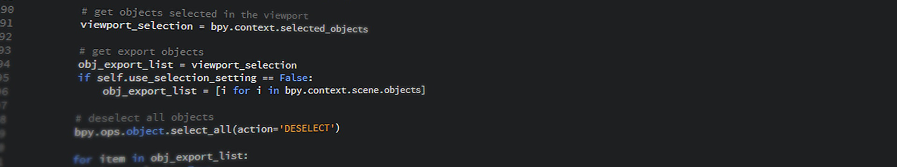
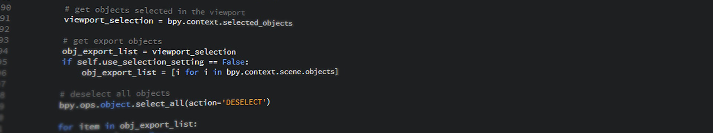

Photo from Unreal Engine 4 Documentation
Pre-Built Game Design Engines
The below video is the first video in a playlist on the basis of Unity engine and how to use it when you're first getting started making games.
The below video is the first video in a playlist on the basis of Unreal Engine 4 and how to use it when you're first getting started making games.
Pre-built engines are the easiest method of making video games without using a simple program designed to make the process simple enough for a child to accomplish. Engines are distributed by third-party companies and use a front-end interface to interact with the user while the back-end utilizes coding languages and scripting to create the actual content of the game based on a user's specifications in the graphical interface.
Some popular engines used to make many familiar titles are Unity, currently on version five, and Unreal Engine, currently on version four. Many large-scale, popular games such as the Dead by Daylight, Darksiders Genesis and III, all of the Bioshock series, the Batman: Arkham series, Fortnite, and Rocket League were made within Unreal Engine along with titles like Plague Inc, Tabletop Simulator, Pokémon Go, Hollow Knight, Bloons Tower Defense 6, and the Nintendo Switch port of Doom 2016 being created in Unity Engine.
Here is the first video in a "let's play" series covering gameplay of Bioshock: Remastered, a game made originally in Unreal Engine
Though engines can be used to make video games, they can be used for several other things. The following short film was made by the demo team for a popular scripting engine, Unity, in early 2019:
There are particular pros and cons to each language. Here are some pros and cons of Pre-Built Engines:
Pros
- User friendly graphical interface makes creating games easier
- Powerful graphics potential
- Allows precision scripting when necessary and much simpler alternatives when precision priority
- Resources are at your disposal
- Premade engines mean less work developing your own engine
- Premade engines have potential to easily accomplish more tasks than just creating video games
Cons
- Often have to learn a custom scripting language
- Must work within limitations of the engine
- User interface has a learning curve which one will need to surpass before fluent use